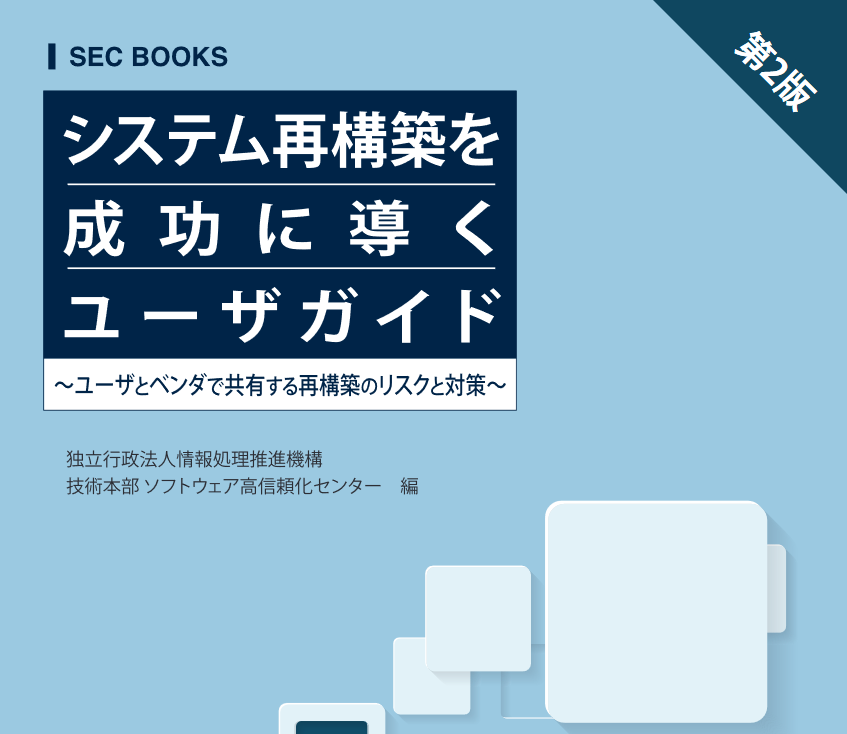

A great Japanese ebook about System design
Reconstructing a system is difficult. Many companies are worried about the failure of development projects in system reconstruction and system troubles after operation. Imagine your company has developed and maintained a system for many years. Because business environment keeps changing rapidly, it needs to be rebuilt to adapt to new requirements. Every time, the system becomes larger and more complex, and the number of troubles is increasing in many areas.
In order to make system restructuring a success, the Software Reliability Enhancement Center of Information-technology Promotion Agency, Japan (or IPA in short) has published a book called システム再構築を成功に導くユーザガイド (you can find the second version here.

I came across this ebook while searching on the internet for system rebuild materials. As I have zero experience with these kinds of stuff, and my current tasks at work are investigating and analyzing customer’s system, giving consultation to user, this ebook is really helpful.
If you’ve ever worked in a Japanese company, especially “old style” companies, may be you already know how crazy their paperwork system can be, even though a lot of them are going for DX (Digital Transformation).
Let’s go back to the book. There are 4 parts, I will try to translate them into English :
- 解説編 (Explanation): When and why we need to build a new system etc
- 再構築手法選択編 (How to choose a system rebuild method): Steps to investigate, analyze current system and pick out the rebuild method.
- 計画策定編 (Planning): Explain some viewpoints to consider when planning for system rebuild
- 事例編 (Case study)
I think this is a great book for anyone who is working with system analysis, design etc., especially in Japanese company, or just to gain more knowledge about IT.